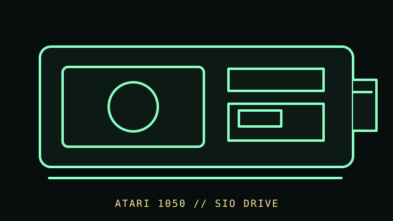

[ FLOPPY DRIVES // IDENTIFIED MODEL ]
Atari 1050 Disk Drive
The Atari 1050 is an external 5.25-inch disk drive for Atari 8-bit computers. The SIO connection and Atari disk software define its host compatibility; the drive is not a PC floppy mechanism.

MODEL IDENTIFICATION: Atari 1050 disk drive; record serial/date information, controller/board revision, and any density or service modifications. The record distinguishes source-documented facts from model/revision-dependent behavior; it is not a compatibility guarantee.
Recorded specifications
| Catalog model | Atari 1050 Disk Drive |
|---|---|
| Device type | External 5.25-inch drive with integrated controller |
| Interface / connector | Atari SIO peripheral connection; host commands and supported formats are Atari-specific. |
| Media / formats | 5.25-inch magnetic disks. Recording mode and filesystem geometry depend on the Atari drive, DOS, and any modification; no capacity is generalized here. |
| Revision caution | Confirm the complete model designation, nameplate, connector, board/firmware revision, and service-manual edition. Related family names are not proof of interchangeable parts or host support. |
Host and controller compatibility
- Use with a compatible Atari 8-bit host and documented SIO cabling/software. It does not connect directly to a PC 34-pin floppy controller.
- Atari 810/1050-family differences and aftermarket density modifications can change software and media behavior; verify the actual board and service history.
- An Atari disk image or flux capture requires a workflow that preserves the Atari-specific format rather than assuming a PC filesystem.
Safe preservation and cleaning
Power down and unplug before opening or cleaning the mechanism. Reject disks with mold, shed coating, creases, or a damaged jacket. Use the exact field-service manual for head cleaning and mechanical service; do not touch the head surface or use unapproved chemicals.
For preservation, photograph labels and connector/board markings before service; document the host, controller, software, settings, and observed condition. Keep original media or raw captures intact and verify checksummed copies before making derivatives.
Manufacturer manuals & archival references
- Atari 1050 Disk Drive Owners Manual — Internet ArchiveDigitized owner documentation for the 1050 drive.
- Atari 1050 Disk Drive Field Service Manual, Rev. 03 — Internet ArchiveArchived field-service documentation; revision matters for repair and adjustment.
- Atari 1050 DOS documentation — Internet ArchiveSupplementary archived disk operating-system documentation; consult the host/software edition in use.
Archive scans and project pages may cover a family or a particular revision. The full model/revision-specific manufacturer manual takes precedence. Capacity or recording mode is omitted where it cannot be tied to the cited model and format.